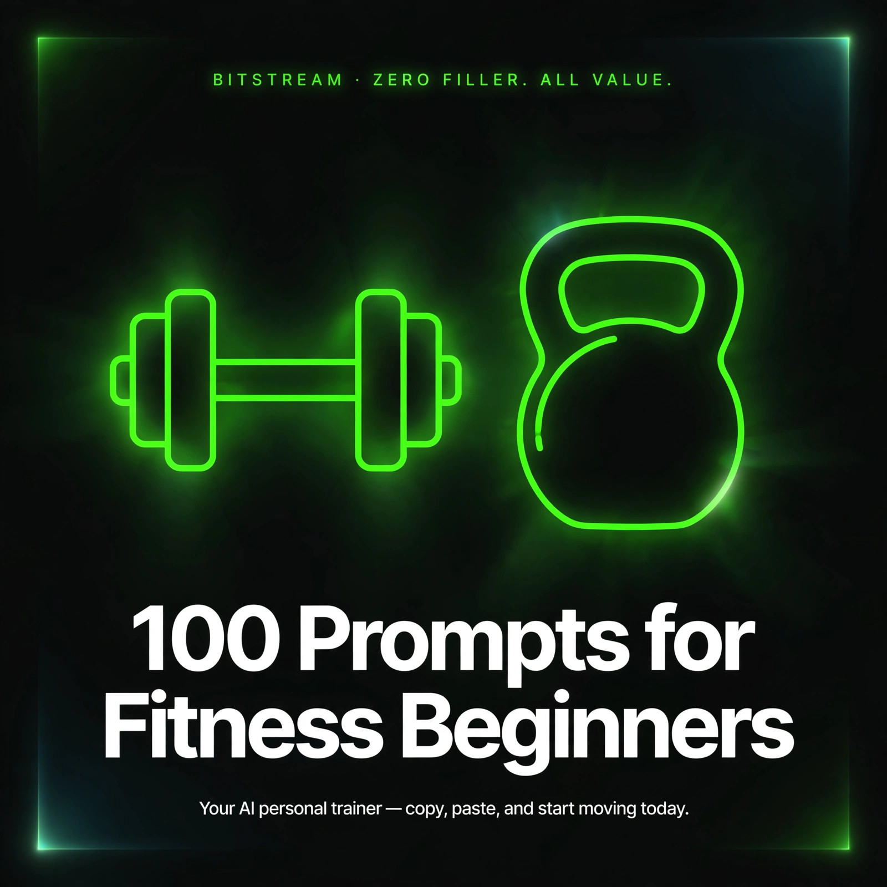

BITSTREAM · ZERO FILLER. ALL VALUE.
100 Prompts
for Fitness Beginners
Your AI personal trainer in copy-paste form.
Open a free AI tool, paste, fill in the blanks, start moving.
ESSENTIAL PACK · $7.99
How to use this pack (60 seconds)
- Open a free AI tool — ChatGPT (chatgpt.com), Claude (claude.ai), or Gemini (gemini.google.com). No account tricks, no paid plan needed.
- Copy any prompt and replace the [BRACKETED] parts with your details.
- Be specific. Your age, schedule, injuries, and what you actually enjoy — specifics in, quality out. "Give me a workout" gets a generic workout. "Give me a 30-minute home workout, no equipment, bad knees, I hate burpees" gets a workout you'll actually do.
- Treat the first answer as a draft. Reply with "make it easier," "make it 20 minutes," or "I only have dumbbells" until it fits your life.
- You are your own coach. AI plans and explains — but it can't check your form or clear you medically. If you have a health condition, injury, or you're pregnant, check with your doctor or a certified trainer before starting anything new.
Rule 1 — Start smaller than you think. Two 15-minute workouts a week you actually finish beat one ambitious plan you quit by Friday. Build the habit, then build the intensity.
Rule 2 — Pain is a stop sign, not a challenge. Muscle burn is normal; sharp pain, dizziness, or chest tightness means stop and get checked out. Never push through anything that feels wrong.
Rule 3 — AI drafts, you verify. AI is great for planning workouts and explaining exercises — but for injuries, heart conditions, or pregnancy, a real doctor or certified trainer has the final word.
1 · Starting Out & Goal Setting
Get clear on where you are, what you want, and how to get moving without burning out in week one.
PROMPT 01
My beginner fitness starter plan
I'm a total beginner at fitness. I'm [age], my current activity level is [sedentary / occasionally active], and I can work out [3 days a week, 30 minutes each]. Build me a realistic first-month plan that's gentle enough not to destroy me but challenging enough to feel progress. Remind me this isn't medical advice and to check with my doctor before starting.
PROMPT 02
Set goals I'll actually hit
Help me set 3 realistic fitness goals for the next [90 days]. Right now I'm [describe your current situation: e.g. winded climbing stairs, can't do a push-up]. I want goals that are specific and measurable but not intimidating, and one "reach" goal for the fun of it.
PROMPT 03
What's realistic for my body
I haven't exercised in [years / since high school / ever really] and I feel intimidated. Give me an honest, encouraging reality check: what should my first 2 weeks actually look like, what results can I reasonably expect in a month, and what's just marketing nonsense I should ignore?
PROMPT 04
Pick my first sport or activity
I want to get fit but I don't know what I'd enjoy. I like [being outdoors / music / competitive games / quiet solo time], I'm [age], and I have [access to a park and a bike]. Suggest 5 activities that fit my personality and access, with why each one might click for a beginner like me.
PROMPT 05
Doctor-visit prep before I start
I'm about to start exercising and I have [high blood pressure / a bad knee / asthma / no conditions but I'm 45 and nervous]. Write me a short list of questions to ask my doctor before I begin, and draft a one-paragraph summary of my health situation I can read to them at the appointment.
PROMPT 06
Budget-friendly fitness audit
I want to get fit on a tight budget. I can spend [$X per month] max. Here's what I already have: [sneakers, a yoga mat, resistance bands]. Tell me exactly where to put my money for the biggest beginner impact, and what expensive stuff is safe to skip.
PROMPT 07
Build my "why" statement
Interview me with [8] questions about why I want to get fit — not the surface answer, the real one. Then turn my answers into a short personal "why" statement I can read when motivation is low. Make it sound like me, not a poster.
PROMPT 08
Find my hidden schedule gaps
Here's my typical weekly schedule: [paste or describe it]. I work [full-time with kids / shift work / freelance hours]. Find realistic workout windows of [20-30 minutes] hiding in my week, and tell me exactly when to take them without wrecking my life.
PROMPT 09
First-week success checklist
Give me a simple daily checklist for my very first week of fitness. I want it to include [movement, sleep, water, and one nutrition win]. Keep each day's list to 5 items max — easy enough that I can't fail all of it, structured enough that it counts.
PROMPT 10
Warm-up I won't skip
Write me a [5-minute] warm-up routine for a total beginner with [stiff joints and a desk job]. No equipment, low impact, in a small space. Explain in one sentence each why these moves matter, so I don't skip them.
PROMPT 11
Cool-down and stretch routine
After a workout I tend to just stop and sit down. Give me a [5-minute] beginner cool-down: gentle moves, one stretch per major muscle group, and breathing cues so I actually slow down. No yoga experience needed.
PROMPT 12
Decode my soreness
I did my first workout and now [my thighs / my arms / everything] is sore. Is this normal? Explain what DOMS is in plain language, how long it should last, what helps, and what soreness would be a red flag to get checked. Include that I should see a doctor for anything that feels sharp or doesn't fade.
PROMPT 13
Baseline fitness self-test
Design a beginner-friendly fitness self-test I can do at home in [15 minutes] with no equipment. Include a cardio check, an upper-body check, a core check, and a flexibility check — with scoring ranges so I can retest in [4 weeks] and see real progress.
2 · Home Workout Plans
No gym, no problem. Bodyweight and minimal-equipment routines built for living rooms, not locker rooms.
PROMPT 14
No-equipment starter routine
Build me a full-body workout I can do in my living room with zero equipment, [25 minutes], [3x per week]. Include every exercise with sets, reps, and rest times, and tell me exactly when to progress it. I'm a true beginner, so keep it simple.
PROMPT 15
Small-space workout
My workout space is [a 4x6-foot bedroom corner] and I can't jump because of [downstairs neighbors / bad knees]. Design a full-body routine that stays in one spot, no jumping, no lying down, [20 minutes]. Be specific about each move.
PROMPT 16
Resistance-band full body
I have [a set of resistance bands with handles] and [no bench]. Write me a full-body strength routine hitting legs, back, chest, shoulders, and arms — [30 minutes] — with bands only. Tell me how to anchor them safely without door damage.
PROMPT 17
Dumbbell-only beginner plan
I bought a pair of [10-pound] dumbbells. Write me a 4-week beginner program, [3 days a week], progressing from easy to moderate. Each session should be under [35 minutes] and include which muscles each move works, so I learn as I go.
PROMPT 18
Lunch-break bodyweight circuit
I work from home and want a [15-minute] bodyweight circuit I can do between meetings — quiet, no equipment, no shower needed. Make it a loop I can repeat [2-3 times], with each round getting slightly harder.
PROMPT 19
Chair-assisted workout
I'm a beginner who needs support for balance. Design a full-body workout using a [sturdy chair] for assistance — legs, arms, and core — [25 minutes]. Make it genuinely effective, not watered down to nothing. Flag anything I should clear with my doctor first.
PROMPT 20
TV-time workout
I watch TV for [an hour] every evening. Turn that into a lazy beginner workout: give me one simple move to do during commercials or per episode segment — legs, arms, core, and glutes — so I can exercise without giving up my show. No getting on the floor.
PROMPT 21
Morning movement ritual
I'm stiff every morning from [sitting all day / sleeping on a bad mattress / being 50]. Give me a [10-minute] gentle morning routine — mobility, light activation, a little stretching — that I can do in pajamas before coffee. No burpees, no jumping.
PROMPT 22
Upper-body starter
I can't do a single push-up yet. Write me an upper-body beginner plan that works up to [one real push-up]: which easier versions to start with, how many reps, how often, and a week-by-week progression over [6 weeks].
PROMPT 23
Lower-body starter
My legs and glutes are weak and I want to change that at home. Give me a beginner lower-body workout using [bodyweight only], [20 minutes], with moves that protect my [bad knees]. Include how to know when to make it harder.
PROMPT 24
Core without crunches
Crunches hurt my [neck / lower back]. Give me a beginner core routine with [5] crunch-free exercises, each with how to do them safely, sets, reps, and the most common mistake to avoid on each one.
PROMPT 25
Weekend warrior version
I can only work out on [Saturdays and Sundays]. Design a 2-day full-body beginner plan where each session is [45 minutes] — hard enough to count, structured enough that I'm not just wandering around guessing. Include a recovery plan for Monday through Friday.
PROMPT 26
First-ever dumbbell shopping list
I want to build a beginner home gym for under [$150]. I'm a total beginner who wants [strength and cardio options] in [a small apartment]. Give me an exact shopping list with item names and rough prices, ranked by what to buy first.
3 · Gym Confidence & Etiquette
Walk in like you've done it before. Machines, free weights, and the unwritten rules nobody explains.
PROMPT 27
First gym visit walkthrough
I'm going to [a Planet Fitness / a commercial gym] for the first time and I'm nervous. Walk me through the whole visit: what to bring, what to do when I walk in, how to use 5 basic machines, where to change, and how not to look lost. Make it step-by-step and reassuring.
PROMPT 28
Gym etiquette cheat sheet
I don't want to be "that person" at the gym. Give me the real unwritten rules: wiping equipment, reracking weights, sharing machines, the locker room, noise, phone use, and what's actually rude vs. what just annoys the fussy people. Keep it practical, not preachy.
PROMPT 29
Machine-by-machine beginner tour
Explain [the leg press, chest press machine, lat pulldown, cable row, and treadmill] like I'm five: what each one does, how to adjust the seat and weight, how to do one safe rep, and the beginner-friendly starting weight or level for [someone my size: describe yourself].
PROMPT 30
Overcome gym anxiety
I keep skipping the gym because [I feel judged / I don't know where to start / the free-weight area scares me]. Coach me through this like a supportive friend: what's actually happening vs. what I'm imagining, a low-pressure game plan for my next visit, and a pep talk I can reread.
PROMPT 31
Free-weight area without fear
I've only used machines. Teach me how to enter the free-weight area confidently: which [3 beginner dumbbell exercises] to start with, how much space to claim, how to ask someone if I can work in, and what to do if I drop a weight or can't finish a set.
PROMPT 32
Ask the gym staff
I get to ask a gym trainer [3 questions] during my orientation. I'm a beginner with [bad shoulders / zero experience]. What should I ask to get the most useful, safety-first guidance? Draft the questions in my own words so I don't freeze up.
PROMPT 33
Pick the right gym membership
I'm choosing between [Planet Fitness at $25/month, a local 24-hour gym at $40/month, and my apartment's free gym]. I want to [build strength and do some cardio] as a beginner. Compare them honestly for my goals — what actually matters and what's a trap for beginners.
PROMPT 34
Full-body gym circuit, 40 minutes
I'm at the gym with [machines and dumbbells available] and I have [40 minutes]. Give me a beginner full-body circuit: exact exercises, how to set each machine, reps, and rest — in an order that flows so I'm not wandering the gym floor. No barbells yet.
PROMPT 35
Busy gym backup plan
My gym is packed at [5-7 PM] and the machines I want are always taken. Give me a beginner workout built around [dumbbells, cables, and bodyweight only] that avoids the busiest equipment, plus a 15-minute "everything's taken" backup version.
PROMPT 36
Gym bag packing list
I've never had a gym bag. Tell me exactly what a beginner needs to pack for [a lifting + cardio session]: the essentials, the stuff people forget, and what's a waste of money. I go to the gym [straight from work].
PROMPT 37
Group class survival guide
I'm thinking of trying [spin / yoga / a HIIT class] but I've never done a group class. Tell me what to expect minute by minute, what to wear and bring, where to stand, how to bail if it's too hard without feeling awkward, and how to tell the instructor I'm new.
PROMPT 38
Personal trainer interview
I'm considering hiring a personal trainer for [my first month]. What questions should I ask to find a good beginner-friendly trainer vs. one who'll injure me? Give me [10] interview questions and what good vs. bad answers sound like.
4 · Nutrition Basics & Meal Ideas
Eat to support your training — no fad diets, no calorie obsession, just food that makes the workouts work.
PROMPT 39
Eat to fuel workouts (not diets)
I'm a beginner working out [3x a week] and I want to eat to support it — not diet, just fuel. Explain protein, carbs, and fats in plain language, give me simple daily targets for [my size: describe yourself], and 10 easy meal ideas that hit them. Nothing weighed or tracked to the gram.
PROMPT 40
What to eat before a workout
I keep running out of energy mid-workout. I exercise at [6 AM / 6 PM]. Tell me exactly what to eat before, with [5] options for each timing — something quick for early mornings, something real for evenings — and how long before to eat it.
PROMPT 41
What to eat after a workout
After my workout I'm [starving / not hungry at all]. Tell me what my body actually needs after exercise, give me [7] simple post-workout meals or snacks using [cheap grocery-store ingredients], and explain the protein timing myth honestly.
PROMPT 42
Beginner protein, no protein powder
I don't want protein powder. Show me how to get enough protein from regular food: a full day of eating for [a beginner who strength-trains 3x a week], with [cheap options like eggs, beans, chicken, yogurt, and tuna]. Include grams per meal so I can see it adds up.
PROMPT 43
Hydration without the hype
How much water do I actually need as a beginner who works out [30 minutes, 3x a week] and lives in [a hot climate / an office with AC]? Give me a simple daily water routine, signs I'm under-hydrated, and whether I need sports drinks or if water is fine.
PROMPT 44
Meal prep for one lazy Sunday
I want to meal prep but I hate spending all Sunday cooking. Design a [90-minute] prep session that covers [lunches for 5 days] for a beginner who wants high-protein, boring-but-effective food. Give me the exact grocery list, the cook order, and storage instructions.
PROMPT 45
Snacks that support training
I snack at [night / 3 PM at my desk / between meals]. Give me [12] snacks that actually support my workouts — high protein, not sad diet food — split into sweet, savory, and drinkable. Everything should be grab-and-go, no cooking.
PROMPT 46
Eating out without ruining it
I eat at [fast food / restaurants / work cafeteria] [4x a week] and I'm not giving that up. Tell me how to order smarter for my fitness goals: what to pick at [burgers, tacos, and pizza places], and 3 menu swaps that cut junk without making me miserable.
PROMPT 47
Breakfast that powers mornings
I skip breakfast and crash by [10 AM]. Give me [7] high-protein breakfasts I can make in [under 5 minutes], including [2] I can eat at my desk. Nothing fancy — eggs, yogurt, oats, and toast-level ingredients only.
PROMPT 48
Budget grocery list for fitness
My grocery budget is [$80 a week] and I want to eat well enough to support my training. Give me a full week's grocery list — proteins, carbs, produce, fats, and snacks — priced roughly, with [5] cheap meals I can rotate. No specialty stores.
PROMPT 49
Decode a nutrition label
I picked up [a protein bar / a "healthy" frozen meal] and the label confuses me. Teach me how to read a nutrition label as a beginner: what to check first, what numbers actually matter for fitness, and what marketing tricks to ignore. Here's the label: [paste or describe it].
PROMPT 50
Supplements: what's worth it
Everyone says beginners need [creatine / pre-workout / fat burners / protein powder]. Cut through the marketing: which supplements (if any) are actually worth a beginner's money, which are hype, and what's potentially risky? Remind me to talk to my doctor before taking anything new.
PROMPT 51
Cravings and "cheat" meals
I crave [sweets / salty snacks / soda] and I feel guilty every time I give in. Give me a realistic framework for handling cravings as a fitness beginner: which cravings to satisfy, smarter swaps, and how to enjoy food without the guilt spiral. No all-or-nothing diet rules.
5 · Form Checks & Exercise Library
Learn the moves right before the weights get heavy. Bad form is how beginners get hurt — this is your insurance policy.
PROMPT 52
Squat form masterclass
Teach me the [bodyweight squat] like a patient coach. Break it into setup, descent, and ascent — what each part of my body should be doing, the [3] most common beginner mistakes, and a self-check I can do with my phone camera. My issue: [my knees cave in / I lean too far forward].
PROMPT 53
Push-up form, finally
I've never done a correct push-up. Walk me through it from zero: starting position, hand placement, the line from head to heels, how low to go, and breathing. Then give me the [4] regression ladder from wall push-up to full push-up with reps for each level.
PROMPT 54
Deadlift without a back injury
I want to learn the deadlift but I'm terrified of hurting my back. Explain the hip hinge in plain language, give me [3] drills to learn the movement with a [broomstick] first, and a conservative first-session plan with [light dumbbells]. Include red flags that mean I'm doing it wrong.
PROMPT 55
Lunge form check
When I do lunges my [knees hurt / I wobble / I feel it only in my quads]. Diagnose the likely form problem, give me the correct step-by-step technique for [a reverse lunge], and 2 easier alternatives if I can't do a standard lunge yet.
PROMPT 56
Plank that works
My planks feel like nothing or like torture — I can't tell which is right. Explain proper plank form: where I should feel it, where I shouldn't, the [3] most common mistakes, and how to build from [20 seconds] to [90 seconds] safely.
PROMPT 57
Dumbbell row for beginners
Teach me the [single-arm dumbbell row] as a beginner back-builder: bench or chair setup, hip position, how to pull without shrugging my shoulder, and the cue that tells me my back muscles (not my arm) are doing the work.
PROMPT 58
Overhead press without shoulder pain
I want to build my shoulders with the [dumbbell overhead press] but my shoulders are cranky. Give me safe setup, the correct path for the weights, breathing, and a [lighter alternative] if full overhead range bothers me. Include when to back off.
PROMPT 59
Glute bridge done right
I can't feel my glutes working — everything goes to my [lower back / hamstrings]. Teach me the glute bridge: foot position, hip height, how to engage the glutes first, and [3] activation drills to wake them up before I even start the exercise.
PROMPT 60
Build my exercise library
Give me a beginner's exercise library of [20] moves: [10] bodyweight and [10] dumbbell exercises covering legs, chest, back, shoulders, arms, and core. For each: a 1-sentence how-to, the muscles worked, and the easiest way to make it harder when I'm ready.
PROMPT 61
Form video self-review
I recorded myself doing [squats / deadlifts / push-ups]. I can't upload the video, but tell me: what are the [5] things I should look for when I watch it back myself? Give me a slow-motion checklist I can run through in under [3 minutes] per exercise.
PROMPT 62
Stretching: what actually helps
I'm [flexible as a brick]. Tell me honestly: what does stretching do and what doesn't it do for a beginner lifter? Then give me a [10-minute] full-body stretching routine for after workouts, with how long to hold each stretch and when to stop.
PROMPT 63
Mobility moves for desk workers
I sit [8+ hours a day] and my [hips, shoulders, and neck] are tight. Give me [8] mobility moves designed for a beginner desk worker — how long to do each, how often per day, and which 3 matter most if I'm short on time.
PROMPT 64
When to add weight safely
I'm doing [goblet squats with a 15-pound dumbbell] and they feel easier now. Teach me the beginner rules for adding weight: how to know I'm ready, how much to add, how to test the new weight safely, and what to do if a rep feels wrong mid-set.
6 · Cardio & Conditioning
Build a heart and lungs that keep up. From couch to "I can actually jog" — without the punishment runs.
PROMPT 65
Couch-to-5K style walk plan
I can't jog for more than [a minute] without dying. Build me a beginner run-walk plan over [8 weeks] that gets me to [a 30-minute jog]. Tell me exactly what to do each week, what pace counts as "easy," and how to handle a week where I fall off.
PROMPT 66
Walking that actually counts
I can commit to walking [30 minutes, 5x a week]. Make it count: what pace, what route features to look for, how to add intervals, and how to turn a casual walk into real cardio over [4 weeks]. Include how to track it without a smartwatch.
PROMPT 67
Beginner HIIT at home
Design a [20-minute] beginner HIIT workout with [no equipment, no jumping] for someone with [decent fitness but zero HIIT experience]. Give me the work/rest ratios, [6] exercises in order, and how to know I'm pushing hard enough but not overdoing it.
PROMPT 68
Low-impact cardio options
Running hurts my [knees / shins / back]. Give me [8] low-impact cardio options — at home and at the gym — ranked by beginner-friendliness, with a starter version of each and how long a session should last.
PROMPT 69
Swimming for absolute beginners
I'm a beginner who wants to swim for fitness but I'm [a weak swimmer / nervous about lanes]. Give me a first-month plan: pool etiquette, [3] beginner-friendly swim sessions with drills, what gear to buy, and how to rest without hogging the wall.
PROMPT 70
Bike my way to fitness
I have [a basic bike] and I want to use it for cardio [3x a week]. Give me a beginner cycling plan: how long, what effort level (explain perceived effort simply), [2] routes I can repeat, and how to progress over [6 weeks].
PROMPT 71
Stair climbing starter
There's a [stadium / office building / apartment staircase] near me. Turn it into a beginner cardio workout: warm-up, work intervals, total rounds, and cool-down — [25 minutes] total. Include safety tips and when to call it a day.
PROMPT 72
Dance cardio for people with no rhythm
I hate treadmills and I have no dance skills. Recommend [5] beginner-friendly dance or movement-based cardio options (videos, classes, or apps), what makes each one beginner-proof, and how to start without embarrassment at home first.
PROMPT 73
Cardio vs. weights: the split
I lift [3x a week] and want to add cardio, but I have [limited time / fear of losing muscle / low energy]. Tell me honestly how to combine them: which days, how much, what type, and what to do when the cardio leaves me too tired to lift well.
PROMPT 74
Measure my cardio progress
I want proof my cardio is improving without fancy gear. Give me [3] simple tests I can do monthly — a walk test, a stair test, and a heart-rate recovery check — with beginner benchmarks so I know what "better" looks like.
PROMPT 75
Heart-rate zones in plain English
Everyone talks about heart-rate zones but I don't get them. Explain the [5] zones like I'm [a beginner with no sports background], how to estimate my max heart rate, which zones matter for me, and how to train in each one with or without a tracker.
PROMPT 76
Bad-weather cardio backup
My main cardio is [walking/running outside] but [rain / winter / extreme heat] kills it half the year. Give me a [25-minute] indoor cardio backup plan with no equipment, plus [3] free indoor options near me I haven't thought of.
7 · Staying Consistent & Motivation
Motivation fades by week three. Systems, accountability, and psychology are what carry you past it.
PROMPT 77
My anti-quit system
I always quit by [week 3] because [I get bored / life gets busy / I don't see results]. Design me a personal anti-quit system: habit rules, minimum-viable workouts for bad days, an accountability setup, and what to do the day I want to stop. Make it fit [my schedule: describe it].
PROMPT 78
Habit stack my workouts
I already reliably do these daily things: [morning coffee, lunch, walking the dog]. Build me a habit-stacking plan that attaches short workouts to these anchors, so exercising becomes automatic instead of a decision I have to make.
PROMPT 79
Workout music playlists
I work out to [hip-hop and pop] and I hate slow songs mid-set. Build me a [40-minute] playlist structure for [lifting vs. cardio days]: what energy level goes where, [10] specific track suggestions, and how to time the beat drops to my hardest sets.
PROMPT 80
Find a workout buddy plan
I want a workout partner but I don't know how to find one. Give me [5] realistic ways to find a beginner-level workout buddy — including how to pitch it without being awkward — and [3] "first workout together" session ideas that work for mismatched fitness levels.
PROMPT 81
Restart after falling off
I stopped working out [6 weeks] ago and now I'm embarrassed to start over. Give me a compassionate restart plan: a [2-week] ease-back-in schedule, how to handle the fitness I lost, what NOT to do on day one, and a pep talk for the guilt.
PROMPT 82
Reward system that works
Design me a non-food reward system for [working out 4x a week for a month]. I like [experiences / gear / experiences with my partner] and my budget is [$X]. Make the milestones visible and the rewards genuinely motivating — no gold stars.
PROMPT 83
Beat the "I don't feel like it" voice
On [tired evenings] my brain talks me out of working out. Give me a mental toolkit: the 5-minute rule, the "just put on your shoes" trick, and [3] reframes for my specific excuses: [I'm too tired, I'll do it tomorrow, one day off won't matter]. Write it in my voice.
PROMPT 84
Make workouts fun again
My routine is getting boring and I'm losing interest. I currently do [describe your routine]. Give me [7] ways to make it fun again — gamification, challenges, new formats, seasonal twists — without abandoning the basics that work.
PROMPT 85
Travel workout kit
I travel for [work / vacation] [twice a month] and hotel gyms are [tiny or nonexistent]. Give me a packable workout plan: [3] no-equipment hotel-room sessions, [2] that use whatever's around, and how to stay on track with food on the road.
PROMPT 86
Sleep for recovery
I sleep [5-6 hours] and feel it in my workouts. Explain — simply — why sleep matters for a beginner's progress, then give me a realistic [30-minute] wind-down routine to get to [7+ hours], given that I [scroll my phone in bed].
PROMPT 87
Stress without the couch
When I'm stressed I [skip workouts and eat junk]. Help me rewire that: give me [5] workouts designed specifically for bad days — short, cathartic, no thinking required — plus a "stress first, workout second" game plan for my worst weeks.
PROMPT 88
My 90-day motivation letter
Interview me about [why I started, what I'm afraid of, what I hope for], then write me a letter from my future self at day 90 — encouraging, realistic, specific to my answers — that I can read on the day I want to quit. Don't make it cheesy.
8 · Tracking Progress & Plateaus
What gets measured gets stronger. Track the right things, bust through stalls, and know exactly when to level up.
PROMPT 89
Simple progress tracker setup
I want to track my fitness without obsessing. Design me a simple weekly tracker for a beginner: which [5] things to record after each workout, how to note [energy, sleep, and mood], and a monthly review template. Keep it to [one page or one phone note].
PROMPT 90
Progress photos done right
I want to take progress photos but I feel awkward about it. Tell me exactly how: lighting, angles, clothing, how often, and how to store them privately. Then explain how to compare them fairly [every 4 weeks] so I see real change instead of discouragement.
PROMPT 91
Beyond the scale: real metrics
The scale [barely moves / stresses me out]. Give me [8] better progress metrics for a beginner — strength, measurements, how clothes fit, energy, sleep — with exactly how to measure each one monthly and what "normal progress" looks like.
PROMPT 92
Monthly review ritual
Create a [15-minute] monthly fitness review I do on [the first Sunday of each month]. I track [workouts, weights, measurements, and photos]. Include the [6] questions to ask myself, how to celebrate wins honestly, and how to decide what to change next month.
PROMPT 93
Break a strength plateau
My [dumbbell rows / squats / push-ups] haven't improved in [4 weeks]. I'm stuck at [describe your current level]. Diagnose the likely causes for a beginner, then give me a [4-week] plateau-busting plan: programming tweaks, technique fixes, and recovery checks.
PROMPT 94
Break a fat-loss stall
I lost [10 pounds] then stalled for [3 weeks] despite working out [4x a week]. I eat [describe your typical day]. Give me a beginner-friendly audit: the likely causes of a stall, [3] adjustments to try for 2 weeks, and when it's time to talk to a professional instead of cutting more.
PROMPT 95
Deload week explained
I feel [tired, achy, and weaker] and someone told me to "deload." Explain what a deload week is in plain language, how to know I need one, and give me a [1-week] deload schedule that keeps me moving without losing progress. I'm a beginner doing [3 full-body sessions a week].
PROMPT 96
Graduate to intermediate
I've been training consistently for [4 months] and my beginner routine feels easy. Give me the signs I'm ready for an intermediate program, a [2-week] transition plan, and what "intermediate" actually changes: splits, intensity, volume, and exercise selection.
PROMPT 97
Set a fitness challenge
I want a [30-day] personal fitness challenge to shake things up. I'm a beginner who can currently [do 10 push-ups, jog 10 minutes, hold a 30-second plank]. Design a challenge with daily tasks, 2 rest days a week, a scoring system, and a finish-line test.
PROMPT 98
My fitness story so far
I've been at this for [6 months]. Here's my data: [paste your tracker notes]. Turn it into a clear story: where I started, what improved, what surprised me, and what I'd tell a beginner starting today. Make it something I'd be proud to share.
PROMPT 99
Workout log review
Here's my workout log from the last [8 weeks]: [paste it]. Analyze it like a coach: what patterns do you see, what's working, what should I change, and am I progressing at a reasonable beginner rate? Be honest, not just encouraging.
PROMPT 100
The next-12-months roadmap
I've built the beginner foundation. I'm now [describe your current fitness] and my big goal is [run a 10K / deadlift my bodyweight / just stay consistent for a year]. Map my next 12 months: quarterly focus areas, skills to learn, milestones to hit, and when to get a coach or trainer involved.
You did the hard part: you started.
These 100 prompts are your beginner's toolkit — but they're just words until you use one. So here's the only assignment: pick ONE prompt from this pack and use it today. Build your first workout plan. Set your goals. Walk for 20 minutes. One prompt, one action.
You don't need to be fit to start. You need to start to get fit. And you just did — by opening this pack. Keep going.
The prompts in this pack frame AI as a planning and education tool — not a medical professional. If you have a health condition, injury, heart issue, or are pregnant, check with your doctor or a certified trainer before starting any new exercise or nutrition plan. Stop exercising and seek care if you feel sharp pain, dizziness, or chest tightness.